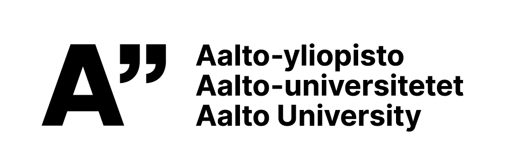
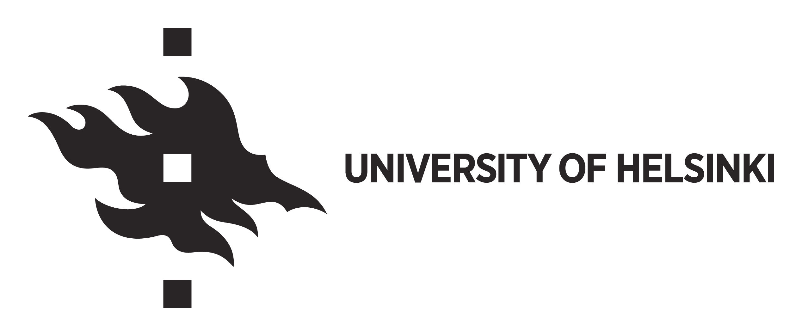

The Baltic Olympiad in Informatics 2026 will be organized in Finland between April 15–19, 2026.
The following countries will be invited: Denmark, Estonia, Finland, Germany, Iceland, Latvia, Lithuania, Norway, Poland, Sweden, Ukraine
The contest will take place in the Helsinki metropolitan area. The venue is the Aalto University campus in Otaniemi, Espoo. Accommodation for contestants and leaders will be provided in Hotel Heymo 1.
More information will be added closer to the competition.

